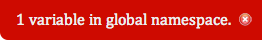

It's all too easy to use a variable name in JavaScript and forget to declare it properly. Maybe it was a typo, but nonetheless it's polluting the global namespace. Wouldn't it be great to be alerted as soon as something slips though the net?
Lichen quietly monitors the global namespace and displays a message when an unknown variable appears. It can easily be configured to ignore those variables that are meant to be there.
Once Lichen has alerted you to new polluting variables, it allows you to identify them and inspect their values.
Simply include the Lichen script in your header code on your development environment and you'll be warned as soon as any rogue variable is created. You can customise Lichen's behaviour by altering the query string when you include the script.
You can include the script in your page right now by inserting the following code:
<script src="http://paulcuth.me.uk/lichen/lichen.js.php"></script>
Alternatively, you can download Lichen from GitHub and host it yourself.
You can configure Lichen in several ways, including how to ignore acceptable variables:
<script src="http://paulcuth.me.uk/lichen/lichen.js.php?accept=$,jQuery,myLib"></script>
Check more or less frequently (default is every 5000 milliseconds):
<script src="http://paulcuth.me.uk/lichen/lichen.js.php?accept=$,jQuery,myLib&frequency=1000"></script>
Tolerate a certain number of rogue variables before warning (default is zero):
<script src="http://paulcuth.me.uk/lichen/lichen.js.php?accept=$,jQuery,myLib&tolerence=3"></script>
Automatically show polluting variables:
<script src="http://paulcuth.me.uk/lichen/lichen.js.php?accept=$,jQuery,myLib&popup=1"></script>
Show the warning at a different position in the viewport:
<script src="http://paulcuth.me.uk/lichen/lichen.js.php?accept=$,jQuery,myLib&position=top-left"></script>
Show a positive message when all is well:
<script src="http://paulcuth.me.uk/lichen/lichen.js.php?accept=$,jQuery,myLib&showok=1"></script>
If you'd like to see it in action, you can run Lichen on this page.
If you want to check the global namespace of a live site, simply drag the following link into your bookmarks bar and click it when you're visiting the site: